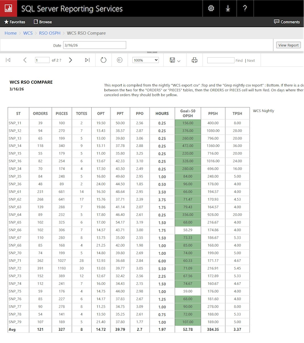

SQL Server Disaster Recovery
Overview
Recovered a failed SQL Server environment supporting production reporting and operational systems, restoring full functionality under time-sensitive conditions.
Failure Scenario
A critical SQL Server failure resulted in loss of SSRS reporting services and broken integrations with warehouse and operational systems.
Recovery Approach
- Restored ReportServer and ReportServerTempDB
- Reconfigured SSRS service and encryption keys
- Rebuilt database security mappings and permissions
- Reconnected application data sources
- Re-established linked servers (SQL ↔ Oracle/WCS)
Technical Work
SSRS Restoration:
Restore ReportServer
Restore ReportServerTempDB
Rebind encryption keys
Validate service account permissions
Linked Server Rebuild:
EXEC sp_addlinkedserver
@server='WCS_PROD',
@provider='OraOLEDB.Oracle'
Challenges
- Missing encryption keys affecting SSRS
- Broken report data sources
- Permission mismatches across databases
- Cross-system dependency failures
Impact
Successfully restored full reporting capabilities and system integrations, minimizing downtime and preventing operational disruption.


Why This Matters
This work demonstrates the ability to handle high-pressure failure scenarios, restore critical systems, and ensure business continuity across interconnected environments.